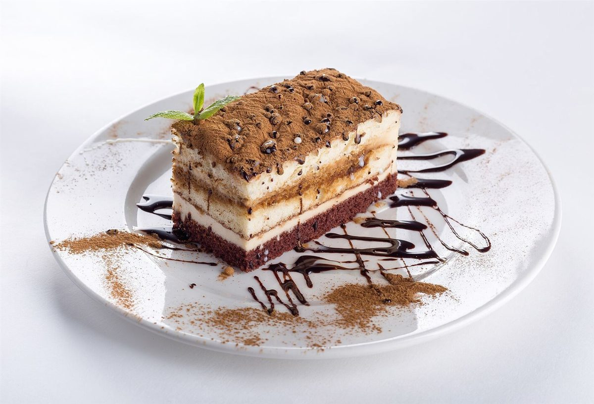
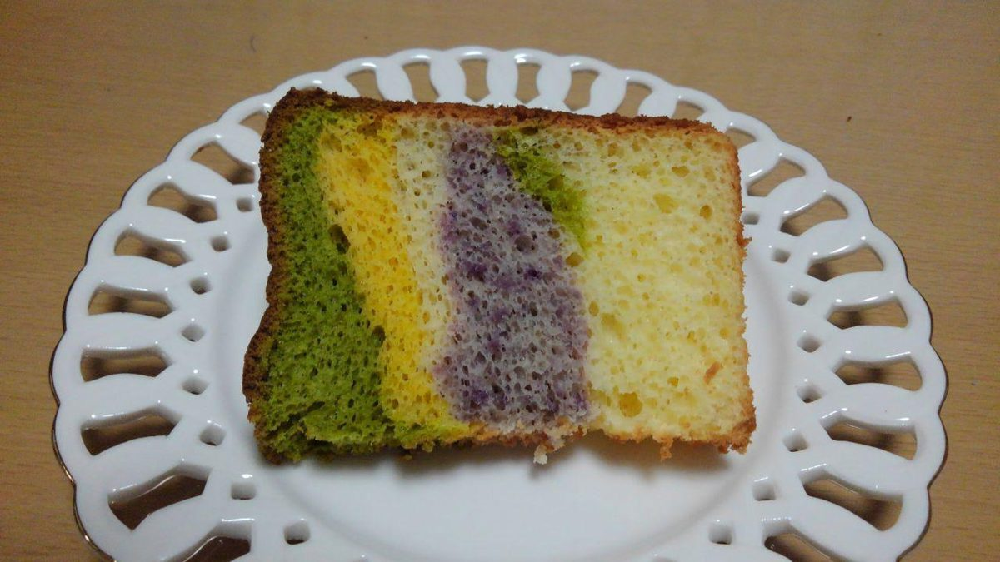
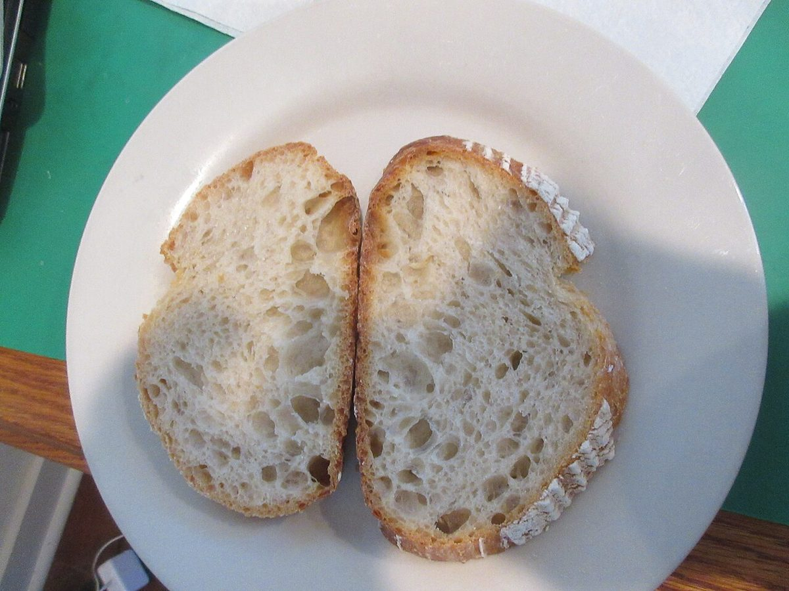
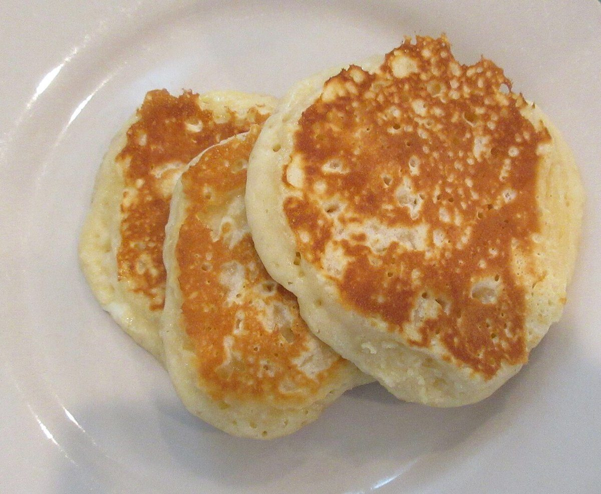
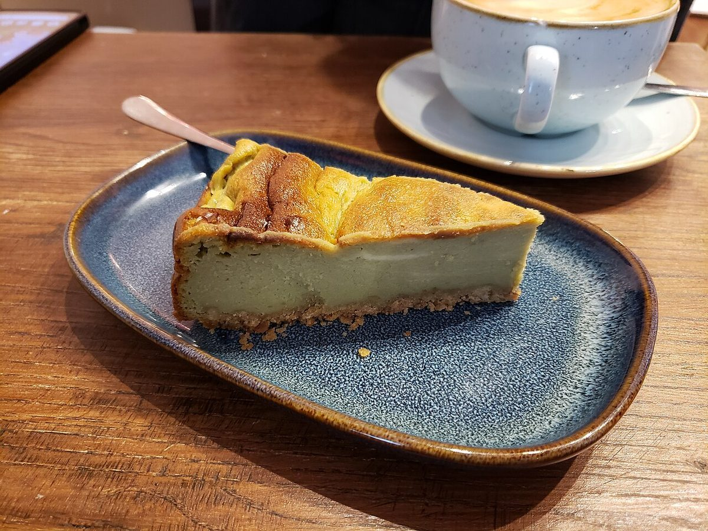
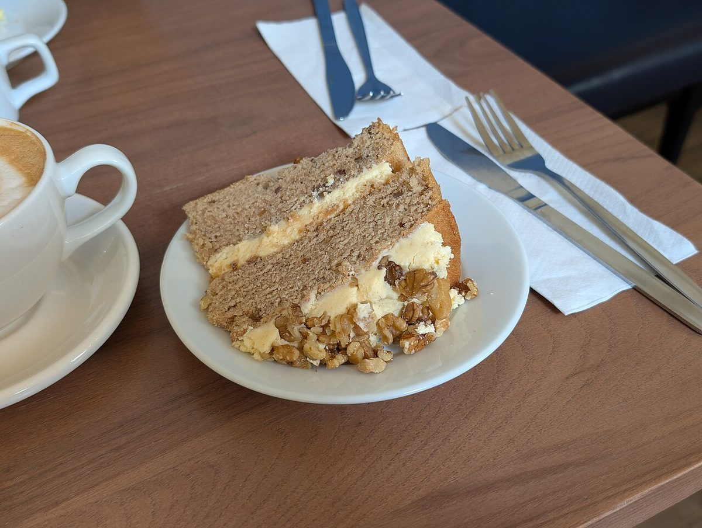

制作側の連想
皿を文字盤に見立てて
これは制作側の連想です。お店の理念・屋号の由来とは無関係で、由来を述べるものでもありません。「assiette」はフランス語で「皿」の意味の語として知られているため、制作側がページを「皿の文字盤」に見立てました。
このサイトでは、皿の上を時計に見立て、12時・3時・6時・9時の位置に4つの話題を置きました。皿に料理を置く位置を時計の針の位置で呼ぶ見方があるそうです(お店とは関係のない、制作側の遊びです)。
十二枚のお皿(イメージ)
1時から12時まで
お店の写真ではありません。皿の写真を12枚、時刻の順に並べたフリー素材のイメージです。
- 1時
白い皿にのったココア粉とチョコソースの層のケーキ(イメージ) - 2時

ピンクの面に置かれた空の白い皿とフォークとナイフ(イメージ) - 3時

金縁の皿にのったトースト(イメージ) - 4時

くすんだ金属の皿にのったチョコレートケーキ(イメージ) - 5時

青い線の入った白いカップとソーサー(イメージ) - 6時

白いクロスにナイフとフォークが並ぶ正式なテーブルセッティング(イメージ) - 7時

透かし模様の白い皿にのった色の層のシフォンケーキ(イメージ) - 8時

白い皿にのった二切れのパン(イメージ) - 9時

白い皿にのった三枚の小さなパンケーキ(イメージ) - 10時

いちごを花びらのように並べたタルトを真上から(イメージ) - 11時

青い楕円の皿にのったチーズケーキ(イメージ) - 12時

白い皿にのったくるみのケーキ(イメージ)
ご案内
お店のこと(確認できたものだけ)
| 所在地 | 〒396-0026 長野県伊那市西町5294-4 |
|---|---|
| 電話 | なし |
| 営業時間 | 準備中 |
| 定休日 | 準備中 |
| ご予約 | 準備中 |
| 駐車場 | 準備中 |
| SNS | Instagram @assiette_cafe_sweet |